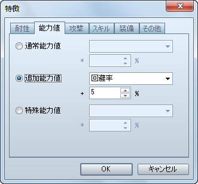
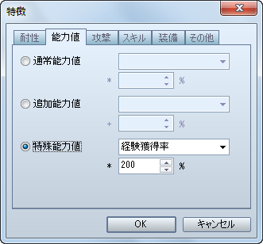
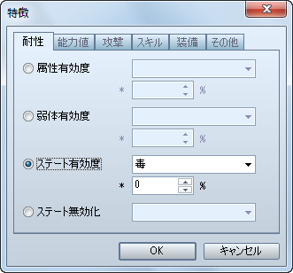

防具の回避率の設定方法です。
［防具］特徴 − 能力値 − 追加能力値 − 回避率

会心の一撃（VX では「クリティカルヒット」）を防ぐ防具を作成する場合の設定方法です。
［防具］特徴 − 能力値 − 追加能力値 − 会心回避率
スキルの消費 MP を半分にする防具を作成する場合の設定方法です。
［防具］特徴 − 能力値 − 特殊能力値 − MP消費率

戦闘終了後に獲得出来る経験値を 2 倍にする防具を作成する場合の設定方法です。
［防具］特徴 − 能力値 − 特殊能力値 − 経験獲得率

歩行中、および戦闘中に HP が少しずつ回復する防具を作成する場合の設定方法です。
［防具］特徴 − 能力値 − 追加能力値 − HP再生率

該当する属性を伴う攻撃によるダメージを半減させる防具を作成する場合の設定方法です。
［防具］特徴 − 耐性 − 属性有効度

該当するステートを無効化する防具を作成する場合の設定方法です。
［防具］特徴 − 耐性 − ステート有効度
